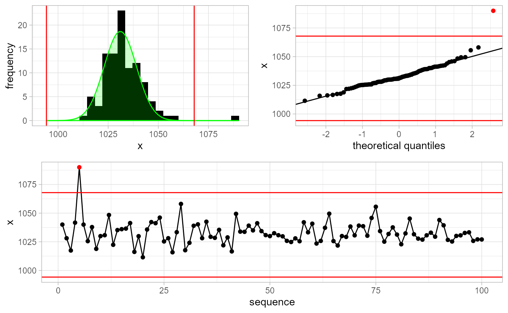
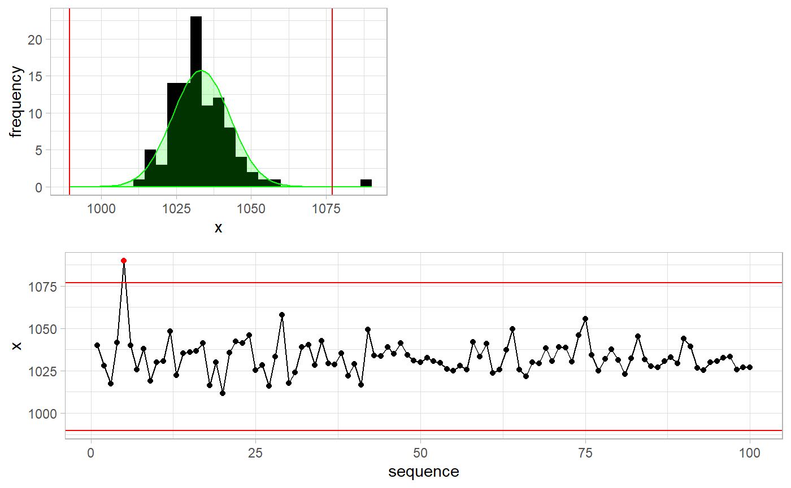
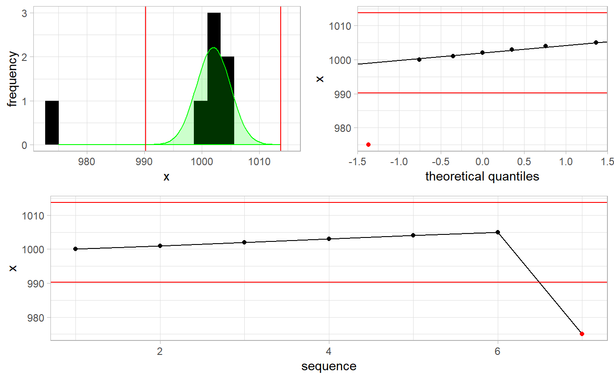
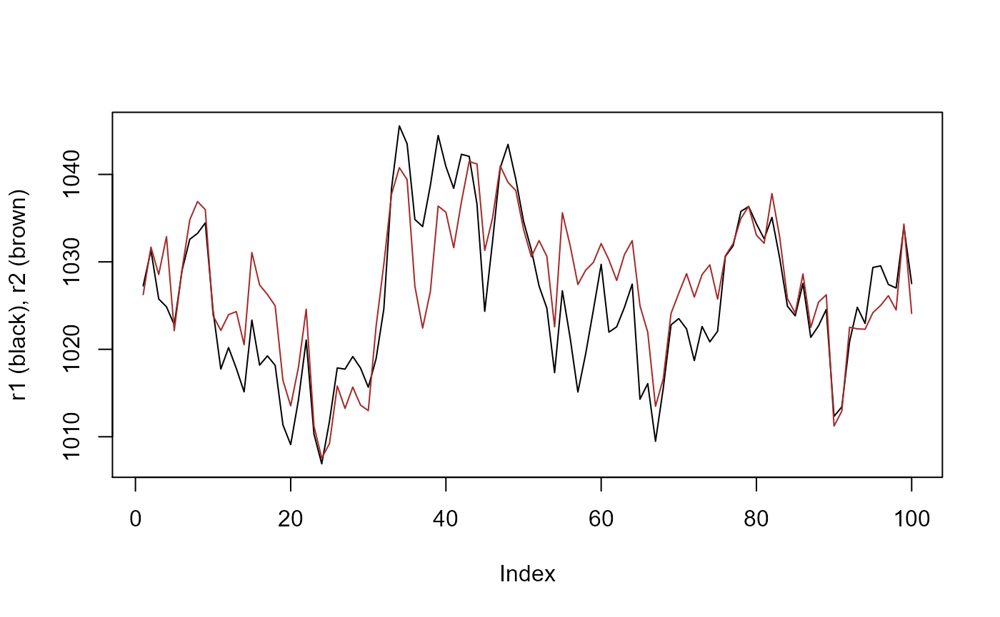
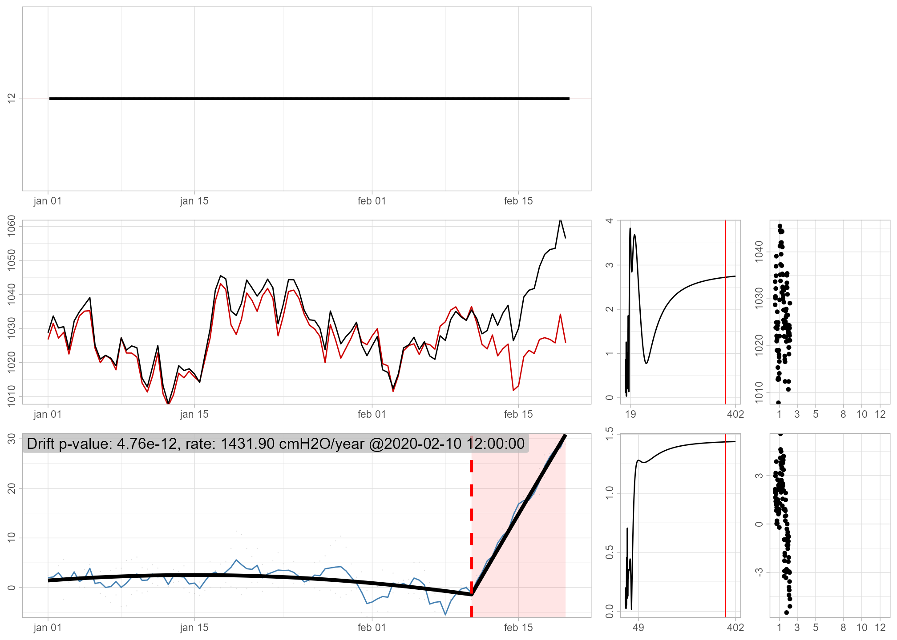
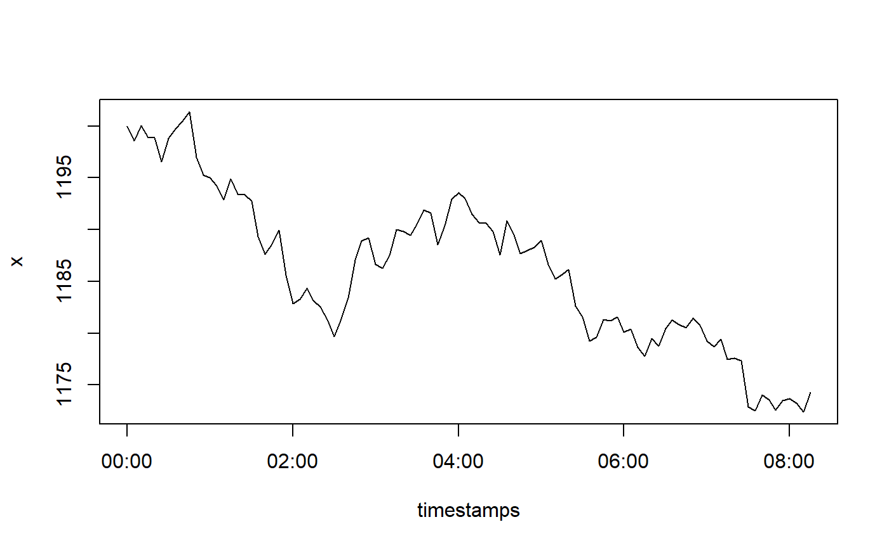
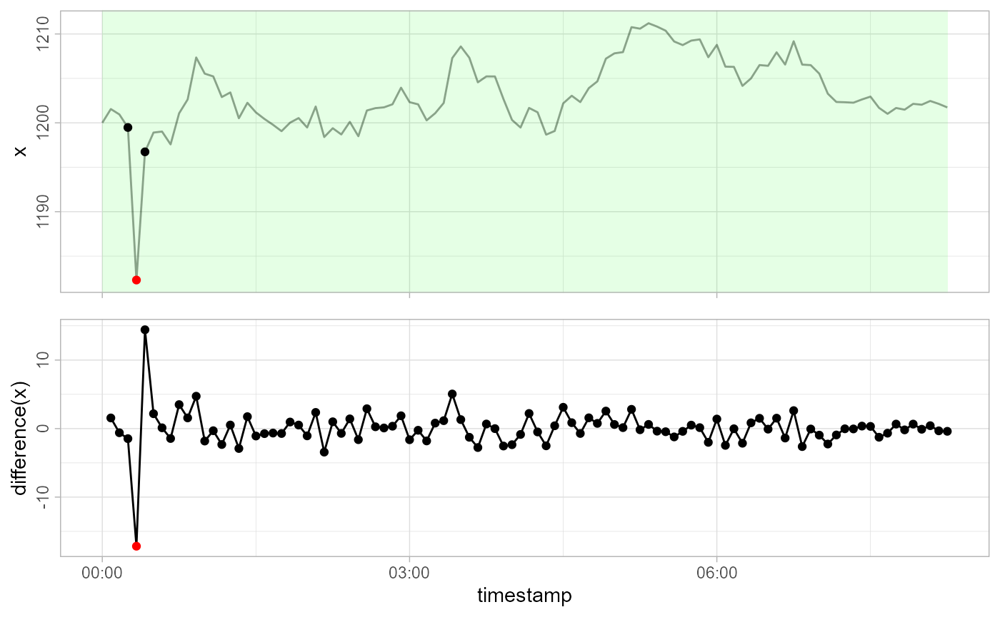
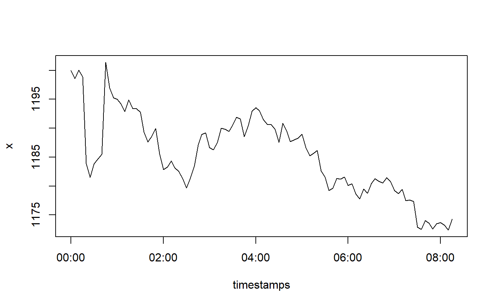
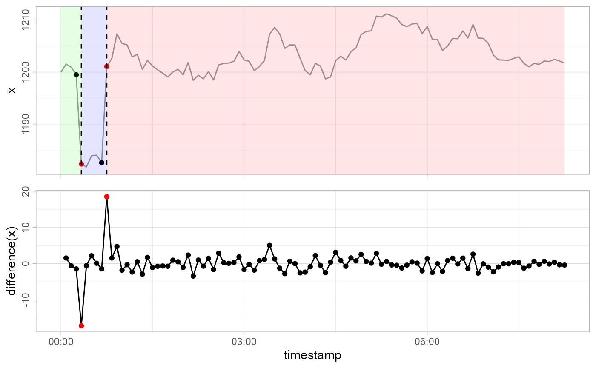
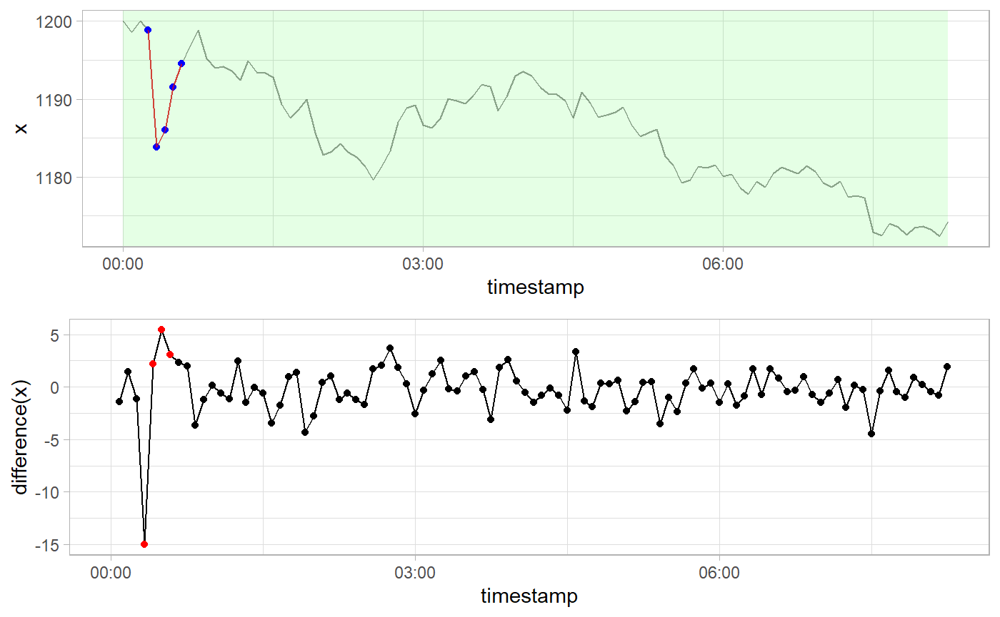

gwloggeR is a package for automatized flagging of outliers, level shifts, temporal changes and drift in raw air and hydrostatic pressure data.
Here you find the basic building-blocks of the package. Before continuing, make sure you have correctly installed the last stable version of gwloggeR.
At its core gwloggeR consists of several detect_ functions which take as input a vector of observations, and return a boolean vector of the same length specifying TRUE for each positive detection, and FALSE otherwise.
Currently, there are four detect_ functions defined:
gwloggeR::detect_outliers() which detects outliers.gwloggeR::detect_levelshifts() which detects level shifts in hydrostatic pressure data.gwloggeR::detect_temporalchanges() which detects changes that have a temporal effect with an exponential decay in hydrostatic pressure data.gwloggeR::detect_drift() which detects barometer drift.`In the following sections we look at each of these functions in more detail.
The underlying assumption for outlier detection is that air pressure is normally distributed.
Lets generate some sample air pressure data. Based on Belgium, our Gaussian parameter estimates for air pressure are: \(\hat{\mu} = 1033 \; cmH_2O\) and \(\hat{\sigma} = 9.5 \; cmH_2O\)
n <- 100L mu <- 1033 sigma <- 9.5 x <- rnorm(n, mean = mu, sd = sigma) plot(x, type = 'l', ylim = c(1000, 1100))
Now lets add an outlier to x. An outlier we define as a single extreme value (e.g. \(6 \times \hat{\sigma}\)).
Assuming we do not have any a-priori information about x, we execute:
gwloggeR::detect_outliers(x, plot = TRUE)

#> [1] FALSE FALSE FALSE FALSE TRUE FALSE FALSE FALSE FALSE FALSE
#> [ reached getOption("max.print") -- omitted 90 entries ]Note the optional plot = TRUE argument. In that case, besides the boolean vector output signifying that the 5-th observation is an outlier, we also get a plot explaining why it is an outlier.
We can improve detection methods by supplying a-priori information about x. For example, in this case we know that x represents air pressure measurements in Belgium. As such, we make an Apriori object and supply this information to the detection function.
apriori <- gwloggeR::Apriori('air pressure', units = 'cmH2O') gwloggeR::detect_outliers(x = x, apriori = apriori, plot = TRUE)

#> [1] FALSE FALSE FALSE FALSE TRUE FALSE FALSE FALSE FALSE FALSE
#> [ reached getOption("max.print") -- omitted 90 entries ]Without a-priori information the detect_outliers() function will assume normality of x and estimate the \(\mu\) and \(\sigma\) parameters in a robust way. When we supply a-priori information, then other extra assumptions might apply and the detection result will improve. Wonder what exact assumptions are and how it all fits together? Then read the Air pressure vignette.
Drift detection model for air pressure is based on the first-order autoregressive model with a Gaussian error term. Lets generate such a series.
n <- 100L a <- rnorm(n = n, sd = sqrt(25)) x <- as.vector(arima.sim(n = n, model = list('ar' = 0.85), innov = a) + 1033) plot(x, type = 'l')
This series resembles well the air pressure when sampled at 12 hours intervals. Now lets add a drift component to it as a deterministic trend, starting at observation 85.

Although in this example the drift is very pronounced, in reality, it is much more subtle.
To improve the drift resolution, one or more reference series is needed. Reference series should ideally be good non-drifting barometer data. If you’re not sure, then the more series you supply, the generally better results you can expect. For our experiment, lets make 2 non-drifting reference series which are highly correlated with x and themselves, as is the case in reality.
r1 <- as.vector(arima.sim(n = n, model = list('ar' = 0.85), innov = a + rnorm(n, sd = sqrt(3))) + 1033) r2 <- as.vector(arima.sim(n = n, model = list('ar' = 0.85), innov = a + rnorm(n, sd = sqrt(3))) + 1033) plot(r1, type = 'l', ylab = 'r1 (black), r2 (brown)') lines(r2, col = 'brown')

Now, to detect drift, we just supply x and the two reference series r1 and r2 to the detect_drift() function. Note that we also need to supply timestamps, and that the reference data is constructed as a list of list(x, timestamps) objects. For convenience, we supply the plot = TRUE to print the diagnostic plots.
ts <- seq(as.POSIXct('2020-01-01'), by = '12 hours', length.out = n) ref <- list(list(x = r1, timestamps = ts), list(x = r2, timestamps = ts)) result <- gwloggeR::detect_drift(x = x, timestamps = ts, reference = ref, plot = TRUE)

The diagnostic plot in the bottom left signifies in red once the drift is detected. For more about these plots, consult the ‘Diagnostic plots’ section in ?gwloggeR::detect_drift.
The output, captured in the result variable is as usual: a boolean vector signifying FALSE for no drift, and TRUE for all the observations once a drift is detected. In this case the drift is detected around observation 85.
result[(di-5):(di+5)] #> [1] FALSE FALSE TRUE TRUE TRUE TRUE TRUE TRUE TRUE TRUE TRUE
If you want to understand better how drift detection works, you can consult the Air pressure drift detection vignette.
The underlying assumption for hydrostatic pressure is that it is a pure random walk with a Gaussian error term. We also assume that the variance of the error term depends on the time-interval between the observations. For example, if a time-interval is 5 minutes, then we do not expect a change of more than 10 cmH2O.
Armed with these assumptions, lets generate some sample data.
n <- 100L x <- cumsum(c(1200, rnorm(n - 1L, mean = 0, sd = 10/6))) timestamps <- seq(as.POSIXct('2000-01-01'), by = '5 min', length.out = n) plot(timestamps, x, type = 'l')

Now lets add an outlier to our observations x. Here we also define an outlier as a single extreme value in the random walk, but which does not have any effect on subsequent values.
x[5L] <- x[5L] - 15 plot(timestamps, x, type = 'l')
Our x is not normally distributed. Remember that detect_outliers() without any a-priori information assumes normality of x? So if we do not provide any a-priori information about x, the outlier detection will be bad. To improve it, we state that x is hydrostatic pressure data.
apriori <- gwloggeR::Apriori('hydrostatic pressure', units = 'cmH2O')
Note also, that in this case, we also need to supply timestamps to the detection function. This is because the underlying model also considers time-intervals between observations.
gwloggeR::detect_outliers(x, timestamps = timestamps, apriori = apriori, plot = TRUE)

#> [1] FALSE FALSE FALSE FALSE TRUE FALSE FALSE FALSE FALSE FALSE
#> [ reached getOption("max.print") -- omitted 90 entries ]See how the outlier is caught?
Contrary to outliers, level shifts do have a lasting constant effect on the random walk. Lets simulate one:
x[6L:9L] <- x[6L:9L] - 15 plot(timestamps, x, type = 'l')

Now let us see how detect_levelshifts() handles this.
gwloggeR::detect_levelshifts(x = x, timestamps = timestamps, apriori = apriori, plot = TRUE)

#> [1] FALSE FALSE FALSE FALSE TRUE FALSE FALSE FALSE FALSE TRUE
#> [ reached getOption("max.print") -- omitted 90 entries ]The 5-th observation is the start of a level shift down (blue background), and the 10-th observation is the start of a level shift up (red background).
Contrary to level shifts that have a constant effect, temporal changes decay exponentially with time. First we undo the level shift, and then simulate a temporal change with a decay factor of 0.7:
x[5L:9L] <- x[5L:9L] + 15 x[5L:15L] <- x[5L:15L] - 15*0.7^(0:10) plot(timestamps, x, type = 'l')
Now lets see how detect_temporalchanges() reacts:
gwloggeR::detect_temporalchanges(x = x, timestamps = timestamps, apriori = apriori, plot = TRUE)

#> [1] FALSE FALSE FALSE FALSE TRUE TRUE TRUE TRUE TRUE FALSE
#> [ reached getOption("max.print") -- omitted 90 entries ]The temporal change starts at the 5-th observation until it decays around the 9-th.
Now if all this was very obvious to you, you can give gwlogger a try on the real data. If you still wonder how all this works, you can read more about the algorithm in the Hydrostatic pressure vignette.
Hmm… wonder what’s next? Me too!